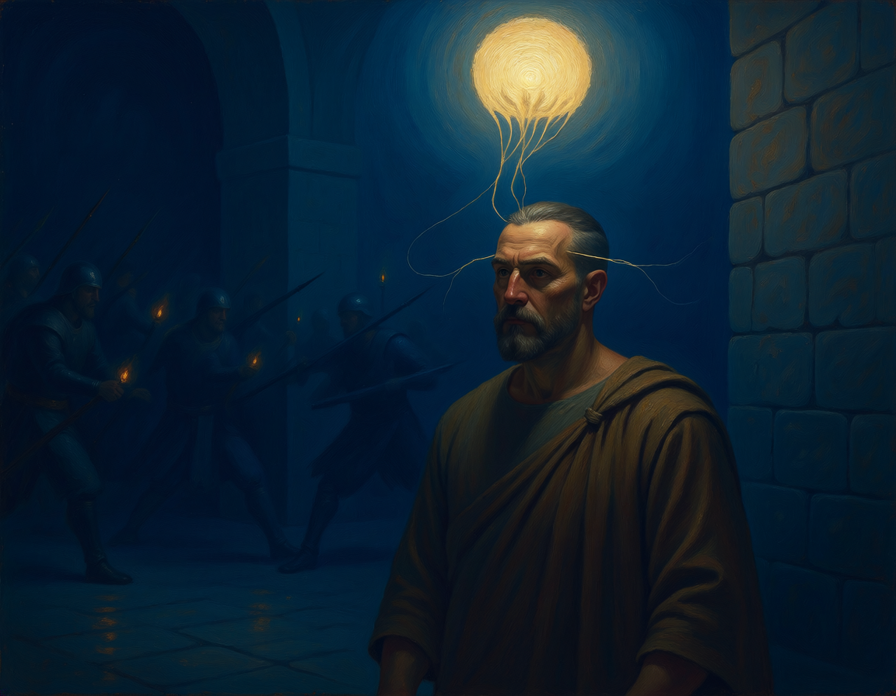

Read closely
Attend to Plutarch’s language, images, and arguments before drawing conclusions.
A student inquiry into the inner life
Sylvester explores consciousness through a close examination of Plutarch, in conversation with the ideas we already carry about self-awareness.
Explore the inquiry
The question we are working on
How do we know what is happening within us? Sylvester treats self-awareness as something to examine, question, and repair—not a simple answer to take for granted.
Attend to Plutarch’s language, images, and arguments before drawing conclusions.
Put the text into conversation with everyday assumptions about knowing ourselves.
Trace where the ancient account unsettles, supports, or reshapes those assumptions.
A text to think with
Our starting point is a rigorous reading of Plutarch’s writing. The imagery of Timarchus and the daimonic offers a way into questions of perception and inner life; the work is to examine what the text says, and what it might ask of a reader now.
We distinguish what the text says from what we bring to it—and keep the conversation open.
Our approach
This project is a work in progress. We are building an interpretation through close reading and reflection, revisiting our ideas as the evidence and discussion develop.